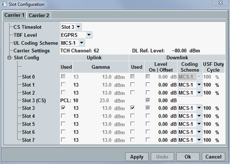

The dialog can be opened from the main view, which also offers "Auto Slot Config" function, see "Connection Setup".
The manual slot configuration configures the generated GSM downlink signal and controls the UL signals of the mobile station under test, in particular for PS connections and multislot operation. Most parameters can be reconfigured in state "TBF Established".
The tabs "Carrier 1" and "Carrier 2" refer to the two PS carriers available in downlink dual carrier mode. The "Carrier 2" tab is only active if this feature is enabled, see "DL Dual Carrier". Some PS parameters can be configured per carrier and are present on both tabs. The PS settings only present on the "Carrier 1" tab apply to both carriers.
For a successful connection setup, configure the settings compatible to the MS capabilities, especially to the multislot class, see also "Checks for failed connection setup".

The "Slot Config" table enables and configures the UL and DL bursts in timeslots 1 to 7. Ensure that the slot configuration is in accordance with the capabilities (multislot class) of your mobile phone.
For the circuit switched (CS) domain, the table indicates the traffic channel timeslot as "Slot...(CS)". The power control level (PCL) can also be configured (for parameter description see "Circuit Switched > PCL").
This parameter is also present in the main configuration dialog, see "Timeslot".
Selects the set of modulation and coding schemes to be used by the MS and the instrument.
- GPRS: CS-1 to CS-4
- EGPRS: MCS-1 to MCS-9
- EGPRS2-A:
– DL: MCS-1 to MCS-4, MCS-7, MCS-8, DAS-5 to DAS-12 – UL: MCS-1 to MCS-6, UAS-7 to UAS-11
The setting can be accessed from both tabs, but the same value applies to both carriers. Option R&S CMW-KS201 is required for EGPRS2-A.
Remote command:Selects the coding scheme for uplink packet data channels. The available values depend on the parameter "TBF Level".
Remote command:These parameters are also present in the main configuration dialog, see "TCH/PDCH Settings".
The "TCH Channel" can be configured individually per carrier while the same "DL Ref. Level" applies to both carriers.
Configures main slot parameters.
Specifies the uplink/downlink timeslots the mobile has to use in a packet switched connection. Slot 0 cannot be enabled.
The settings can be configured individually downlink per carrier.
Remote command:Channel-specific uplink power control parameter ΓCH. The MS transmitter output power PCH is calculated from ΓCH, see "GPRS Uplink Power Control". It is also displayed for information.
Remote command:RF levels in the individual downlink timeslots relative to the "DL Ref. Level" indicated above the "Slot Config" table. Unchecked DL timeslots are inactive, i.e. no DL signal is transmitted in these slots. The DL levels can be changed in all PS signaling states (including "TBF Established").
The settings can be configured individually per carrier.
Option R&S CMW-KS210 is required for configuration.
Remote command:Coding schemes used for the individual downlink timeslots. The available values depend on the parameter "TBF Level".
The setting can be accessed from both tabs, but the same value applies to both carriers.
Remote command:Percentage of downlink GPRS radio blocks containing the uplink state flag (USF) assigned to the MS (see 3GPP TS 45.002).
100 % assigned means that all blocks contain the assigned USF. 0 % assigned and 100% random means that each USF (0 to 7) except the assigned one is used with a probability of 1/7. 12.5 % assigned and 87.5 % random means that each USF including the assigned one is used with a probability of 1/8.
This setting is provided in TBF established signaling state only, after the USF is assigned to the MS under test.
This setting can be used to check whether the USF BLER depends on the transmitted USF.
Option R&S CMW-KS210 required.
Remote command: